理想の人生を描き、見つけ、体感する。
自分の人生がより愛おしくなる
きっかけを、あなたに。
For You
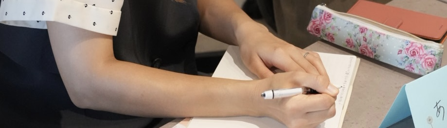
Program
PROGRAM 01
独立して「自分の名前で生きる」と決めた私たち二人のトークセッション。これまで伝えたことのない過程もお話しします。
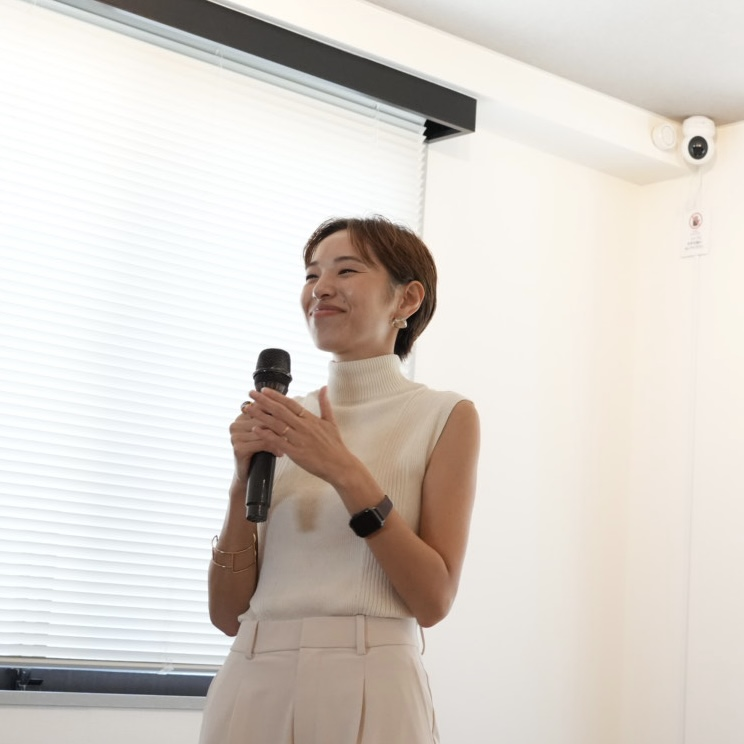
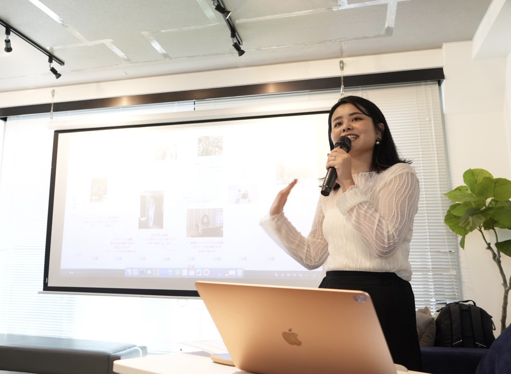
PROGRAM 02
自分の本音に沿った理想の人生を見つけるオリジナルワーク。
「誰かと比べた先」の人生ではなく、
あなただからこそ歩める人生を描きます。
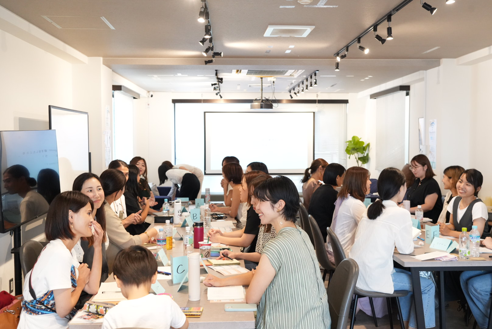
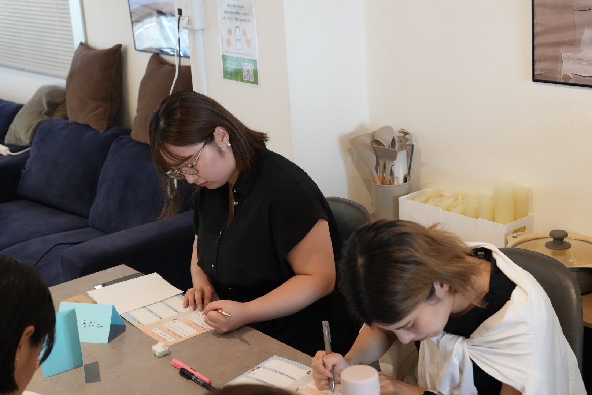
PROGRAM 03
理想の人生を描くだけで終わらせず、シェアや宣言、そして仲間からの声をもって体感していただきます。
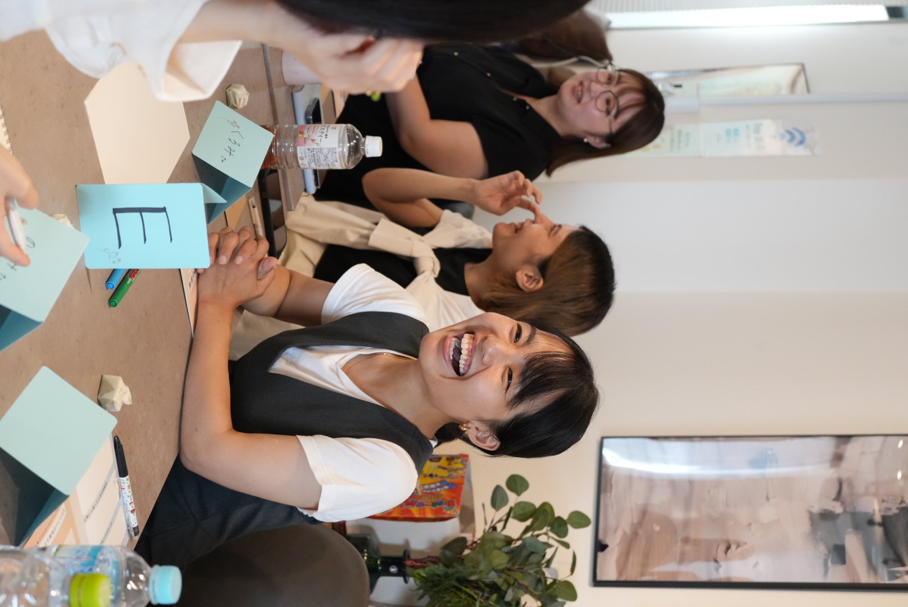
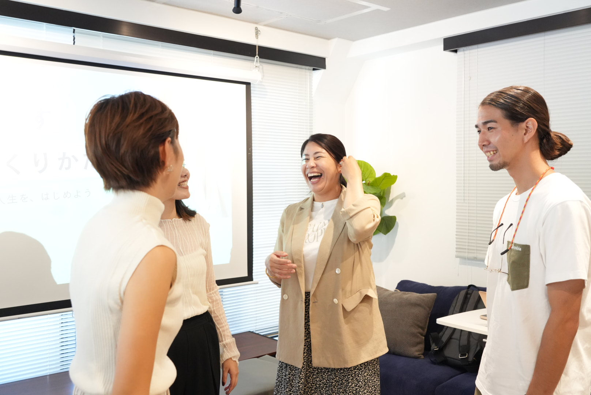
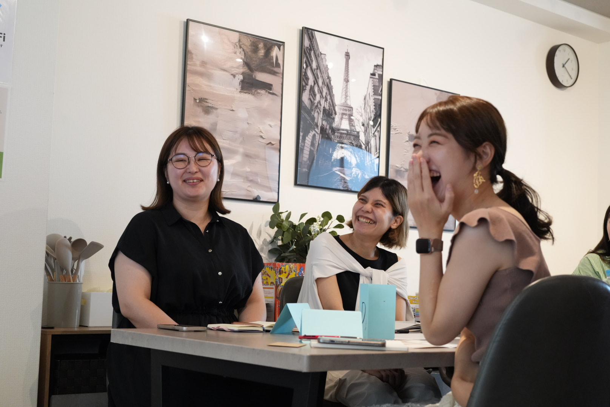
Before
After
Voices
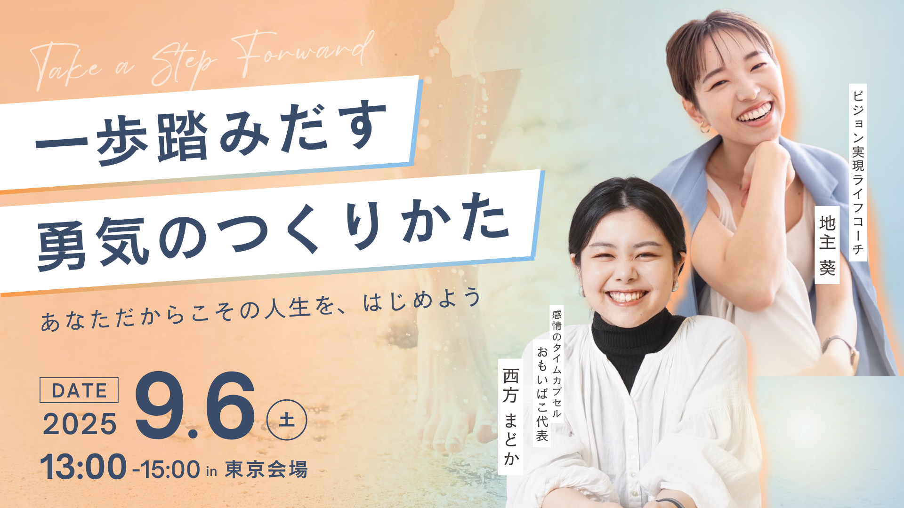
※本イベントは第一弾と異なる内容で実施いたします
前回イベント
「一歩踏みだす勇気のつくりかた」では
実際にこんな声がたくさん届きました
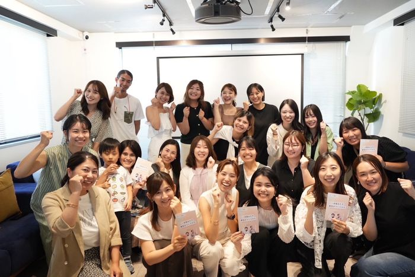
ずっと憧れてた方と
お仕事ができた！
思い切って発信してみたら
たくさんの方と繋がれた！
これからも切磋琢磨できる
仲間と繋がれた！
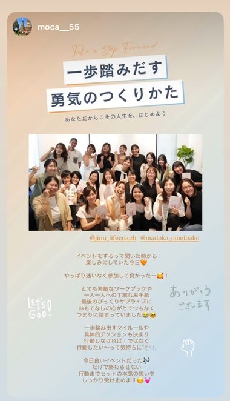
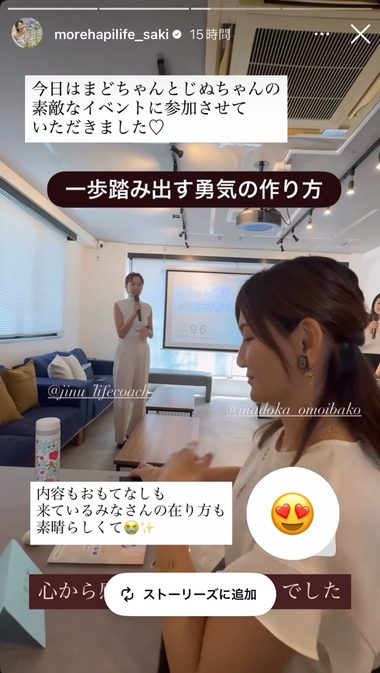
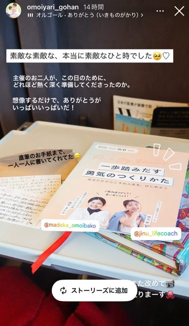
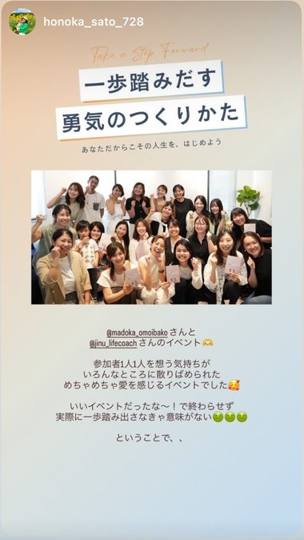
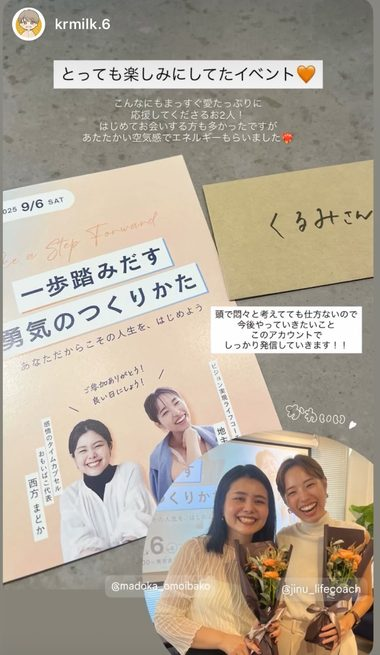
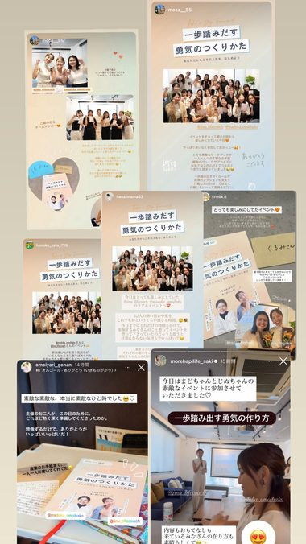
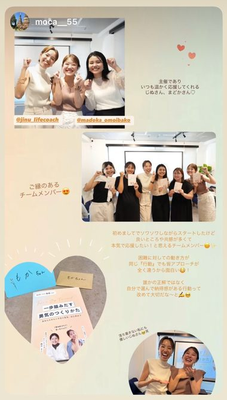
Event Details
日時
2026年 5月30日（土）
12:30 – 15:00
参加費
¥8,800（税込）
会場
愛知県名古屋市中区栄
3丁目19番19号名城線 矢場町駅 徒歩8分
東山線 栄駅 徒歩10分
東山線 伏見駅 徒歩12分
Speakers
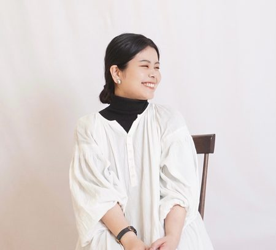
感情のタイムカプセル -おもいばこ- 代表
動画制作サービスTODOKU movie. 代表
大学卒業後、ウェディング会社に就職。ウェディングプランナーとして結婚式を創り届けるうちに「人との繋がりを感じられる瞬間を遺したい」と感じ、会社を辞め独立。
現在は、家族の想いを遺す感情のタイムカプセル「おもいばこ」というオリジナルサービスを立ち上げたり、女性起業家の想いを届ける動画編集者（主にリール）として活動しています。
ライフコーチ / 朝活コミュニティ主宰
大学卒業後、ブライダル企業に就職。約200組の新郎新婦様の幸せな1日をプロデュース。自身のライフステージの変化に伴い、自分の幸せや本当に叶えたいことを見つめ直した結果、会社を退職し2024年6月ライフコーチとして独立。
現在は"自分の人生"を自然体で輝きながら切り拓く人のサポートをしたいという想いで、パーソナルコーチング、朝活コミュニティを主宰し、一歩踏み出す方の伴走をしています。
これまで私たち自身も
「もうこのままでいいや…」と、
自分の人生を諦めそうに
なることがありました。
それでも、
一生に一度の人生を、
"私だからこそ"の
最幸なものにしたい。
80%満足の人生じゃなくて、
「100%以上幸せ！」って
胸を張って言える人生にしたい。
そんな想いを諦めたくなくて、
小さくても一歩ずつ、
私たちは動いてきました。
まだまだ模索中。
キラキラなことばかりじゃない。
でも、だからこそ
近く感じてもらえる存在として、
背中をそっと押せたらと
思っています。
このイベントは、
「本音でつながりたい」
「自分の人生を生きたい」
そんなあなたの背中を、
そっとあたたかく押す場所。
一緒に叶えたい人生に向かって
エネルギーをシェアし合いましょう！
当日お会いできること、
心から楽しみにしております！
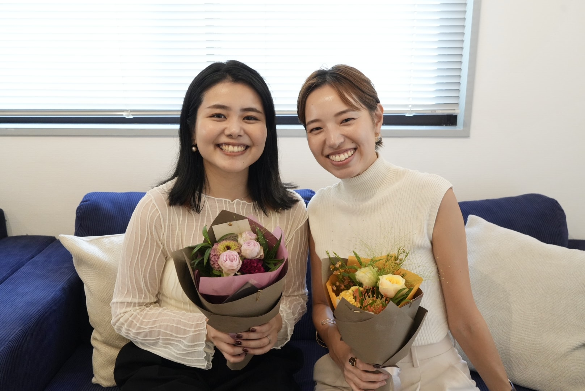
\先着20名様限定/
お申し込みはこちら